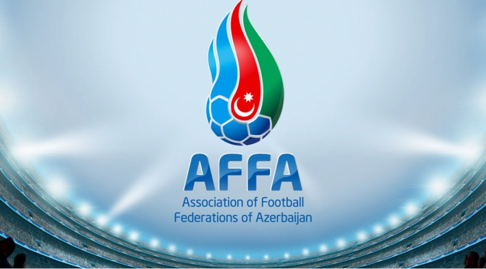

Azərbaycanda ilk futbol klubları 1905-ci ildə yaranıb.[2] Bu komandalar əsasən Bakının iri neft sənayesi şirkətlərini təmsil edirdilər.[2] İlk rəsmi çempionat Bakıda 1911-ci ildə keçirilib, qalib isə İngiltərə Neft Şirkətinin "Britaniya Klubu" komandası olub.[2] 1912-ci ildə "Bakı" komandası Tbilisidə "Sokol" komandasına qarşı ilk beynəlxalq oyununu keçirib və 4:2 hesabı ilə qalib gəlib.[2] 1914-cü ildə Azərbaycanda Futbol İttifaqı yaradılmışdır. İttifaq rəsmi şəhər birinciliklərini və digər yarışların təşkili, keçirilməsini öz üzərinə götürmüşdür.
1927-ci ildə Zaqafqaziya Sosialist Federativ Sovet Respublikasında Azərbaycan ilk yoldaşlıq oyununu Gürcüstan və Ermənistana qarşı keçirmişdir.[3] Azərbaycanın futbol yığması özünün ilk yoldaşlıq oyunlarını 1929-cu ildə Tehranda İran yığmasına qarşı keçirib və həmin oyunlarda 4:0, 4:1 və 11:0 hesabı ilə üç böyük qələbə qazanıb.[2]
Azərbaycan futbolunun "qızıl dövrü" 1960-cı illər sayılır.[4] Məhz bu dövrdə Azərbaycandan Anatoli Banişevski və Ələkbər Məmmədov kimi futbolçular çıxmış, futbol hakimi Tofiq Bəhramov isə 1966-cı ildə İngiltərədə keçirilən dünya çempionatının finalında İngiltərə komandasının lehinə verdiyi obyektiv qərar Uembli stadionuna toplaşmış 98000 tamaşaçının yaddaşına həkk olmuş və dünya futbol tarixinə qızıl hərflərlə yazılmışdı.[5][6] SSRİ milli futbol komandasının tərkibində çıxış edən digər futbolçulardan Kazbek Tuayev, Nikolay Smolnikov, Vitali Şevçenko və İqor Ponomaryovu qeyd etmək olar.
Azərbaycan SSRİ-nin tərkibindən çıxmasından sonra, 1992-cı ildə ölkədə Azərbaycan Futbol Federasiyaları Assosiasiyası (AFFA) yaranmışdır.[7] AFFA 1994-cü ildə UEFA və FİFA-ya qəbul edildi.[2] Həmin andan futbol üzrə Azərbaycan milli futbol komandası 1996-cı il Avropa çempionatının seçmə oyunlarında iştirak etməyə başlayıb.[2]
Ölkənin uğurlu futbolçularından Asim Xudiyev, Aslan Kərimov, Bədavi Hüseynov, Branimir Subaşiç, Dimitri Nəzərov, Elbrus Abbasov, Elvin Məmmədov, Elvin Yunuszadə, Emin Ağayev, Əfran İsmayılov, İsgəndər Cavadov, Fərrux İsmayılov, Kamran Ağayev, Qara Qarayev, Qurban Qurbanov, Mahir Emreli, Mahir Şükürov, Mahmud Qurbanov, Maksim Medvedev, Maşalla Əhmədov, Nazim Süleymanov, Rahid Əmirquliyev, Ramil Şeydayev, Rauf Əliyev, Rəşad Sadıqov, Rəşid Özbəyov, Riçard Almeyda, Rüfət Dadaşov, Sergey Kramarenko, Səməd Qurbanov, Səmədağa Şıxlarov, Tərlan Əhmədov, Vaqif Cavadov, Vəli Qasımov, Vidadi Rzayev, Vüqar Nadirov və Zaur Tağızadəni qeyd etmək olar.